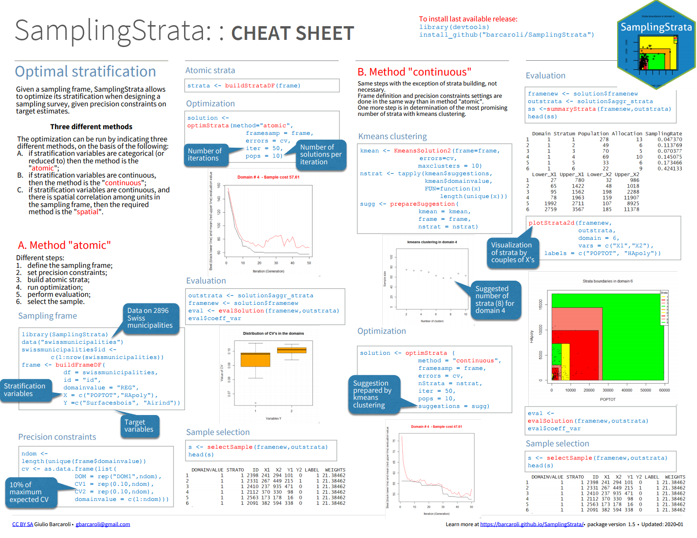
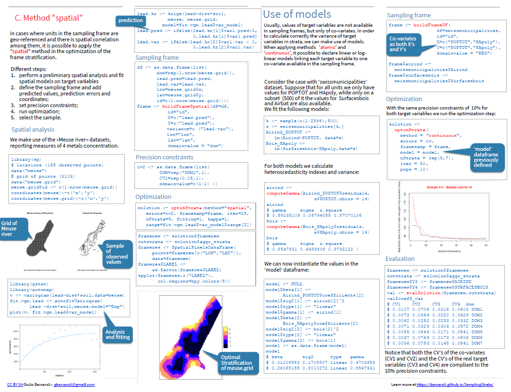

This package offers an approach for the determination of the best stratification of a sampling frame, the one that ensures the minimum sample cost under the condition to satisfy precision constraints in a multivariate and multidomain case. This approach is based on the use of the genetic algorithm: each solution (i.e. a particular partition in strata of the sampling frame) is considered as an individual in a population; the fitness of all individuals is evaluated applying the Bethel-Chromy algorithm to calculate the sampling size satisfying precision constraints on the target estimates.
Functions in the package allow to:
- support in the preparation of required input data;
- execute the optimization step;
- analyse the obtained results of the optimisation step;
- select a sample from the new frame accordingly to the best allocation.
Functions for the execution of the genetic algorithm are a modified version of the functions in the ‘genalg’ package.
A complete illustration of all features and functions can be found at the link:
https://barcaroli.github.io/SamplingStrata/
Download the SamplingStrata cheatsheet from:
https://rstudio.com/resources/cheatsheets/
Installation
You can install SamplingStrata from github with:
install.packages("devtools")
devtools::install_github("barcaroli/SamplingStrata")
Three different methods for the optimization step
The optimization can be run by indicating three different methods, on the basis of the following:
A. if stratification variables are categorical (or reduced to) then the method is the “atomic”;
B. if stratification variables are continuous, then the method is the “continuous”;
C. if stratification variables are continuous, and there is spatial correlation among units in the sampling frame, then the required method is the “spatial”.
Example with the “atomic” method
library(SamplingStrata)
# Load data ---------------------------------------------------------------------------------
data("swissmunicipalities")
head(swissmunicipalities[,c(2:6,9,22)])
# REG COM Nom HApoly Surfacesbois Airbat POPTOT
# 1 4 261 Zurich 8781 2326 2884 363273
# 2 1 6621 Geneve 1593 67 773 177964
# 3 3 2701 Basel 2391 97 1023 166558
# 4 2 351 Bern 5162 1726 1070 128634
# 5 1 5586 Lausanne 4136 1635 856 124914
# 6 4 230 Winterthur 6787 2807 972 90483
# Define the sampling frame -----------------------------------------------------------------
frame <-buildFrameDF(df= swissmunicipalities,
id = "COM", # unique identifier of sampling units
domainvalue= "REG", # domain variable (region)
X = c("POPTOT","HApoly"), # stratification variables
Y =c("Surfacesbois","Airbat")) # target variables
head(frame)
# id X1 X2 Y1 Y2 domainvalue
# 1 261 363273 8781 2326 2884 4
# 2 6621 177964 1593 67 773 1
# 3 2701 166558 2391 97 1023 3
# 4 351 128634 5162 1726 1070 2
# 5 5586 124914 4136 1635 856 1
# 6 230 90483 6787 2807 972 4
# Define precision constraints ------------------------------------------------------------
ndom <- length(unique(frame$domainvalue))
cv <- as.data.frame(list(DOM = rep("DOM1",ndom),
CV1 = rep(0.10,ndom), # precision (cv=10%) for 'Surfacesbois'
CV2 = rep(0.10,ndom), # precision (cv=10%) for 'Airind'
domainvalue= c(1:ndom))) # same precision constraints for all domains
cv
# DOM CV1 CV2 domainvalue
# 1 DOM1 0.1 0.1 1
# 2 DOM1 0.1 0.1 2
# 3 DOM1 0.1 0.1 3
# 4 DOM1 0.1 0.1 4
# 5 DOM1 0.1 0.1 5
# 6 DOM1 0.1 0.1 6
# 7 DOM1 0.1 0.1 7
# Build atomic strata ---------------------------------------------------------------------
strata <- buildStrataDF(frame)
# Number of strata: 2895
# ... of which with only one unit: 2894> head(strata)
head(strata)
# STRATO N M1 M2 S1 S2 COST CENS DOM1 X1 X2
# 100*305 100*305 1 59 0 0 0 1 0 1 100 305
# 1010*1661 1010*1661 1 983 0 0 0 1 0 1 1010 1661
# 102*306 102*306 1 65 0 0 0 1 0 1 102 306
# 1020*5351 1020*5351 1 1375 2 0 0 1 0 1 1020 5351
# 10227*571 10227*571 1 73 48 0 0 1 0 1 10227 571
# 10230*330 10230*330 1 15 2 0 0 1 0 1 10230 330
# Find an initial solution and a suitable number of final strata in each domain -----------
solutionKmean <- KmeansSolution(strata = strata, # atomic strata
errors = cv, # precision constraints
maxclusters = 10) # max number of strata to be evaluated
# number of strata to be obtained in each domain in final solution:
nstrat <- tapply(solutionKmean$suggestions, solutionKmean$domainvalue,
FUN=function(x) length(unique(x)))
nstrat
# 1 2 3 4 5 6 7
# 9 8 10 9 10 9 10
# Optimization step ------------------------------------------------------------------------
solution <- optimStrata(method = "atomic", # method
framesamp = frame, # sampling frame
errors = cv, # precision constraints
nStrata = nstrat, # strata to be obtained in the final stratification
suggestions = solutionKmean, # initial solution
iter = 50, # number of iterations
pops = 10) # number of stratifications evaluated at each iteration
# Number of strata: 2895
# ... of which with only one unit: 2894
# *** Starting parallel optimization for 7 domains using 5 cores
# |++++++++++++++++++++++++++++++++++++++++++++++++++| 100% elapsed=20s
#
# *** Sample size : 362
# *** Number of strata : 59
head(solution$aggr_strata)
# STRATO M1 M2 S1 S2 N DOM1 COST CENS SOLUZ
# 1 1 61.07407 17.37778 41.87780 13.22224 270 1 1 0 9.141966
# 2 2 1114.66667 64.80392 555.75540 53.48631 51 1 1 0 6.985276
# 3 3 57.05128 110.12821 50.51679 35.55146 39 1 1 0 3.550527
# 4 4 477.31472 33.92386 351.59986 37.68313 197 1 1 0 19.010081
# 5 5 3226.14286 184.00000 540.04720 80.64561 7 1 1 0 2.000000
# 6 6 1805.21429 150.28571 256.07733 210.69830 14 1 1 0 7.553702
# Sample selection --------------------------------------------------------------------------
s <- selectSample(frame = solution$framenew, # frame with the indication of optimized strata
outstrata = solution$aggr_strata) # optimized strata with sampling units allocation
# *** Sample has been drawn successfully ***
# 362 units have been selected from 59 strata
#
# ==> There have been 6 take-all strata
# from which have been selected 9 units
head(s)
# DOMAINVALUE STRATO STRATUM ID X1 X2 Y1 Y2 LABEL WEIGHTS FPC
# 1 1 1 195*201 5534 195 201 37 10 1 30 0.03333333
# 2 1 1 172*193 5801 172 193 14 4 1 30 0.03333333
# 3 1 1 349*398 5499 349 398 19 15 1 30 0.03333333
# 4 1 1 2939*460 5582 2939 460 67 50 1 30 0.03333333
# 5 1 1 186*309 5663 186 309 65 10 1 30 0.03333333
# 6 1 1 290*421 5463 290 421 11 14 1 30 0.03333333